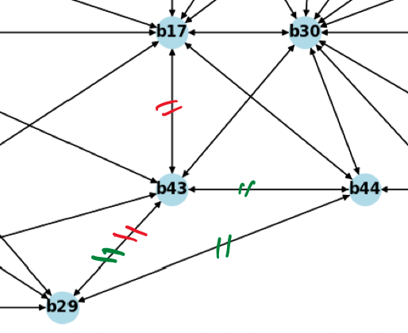

3.2 Remove Overlapping Edge
A potential edge can overlap some bus on its way from source to target.
For example, in case-70:
\[ \begin{array}{lllll} \hline \textbf{shortest path} & < & \textbf{direct edge} & \times \textbf{threshold} & \text{-> } \textbf{remove direct edge} \\ \hline \text{"b17‐b43-b29"} & < & \text{"b17-b29"} & \times 1.1 & \text{-> remove "b17-b29"} \\ \text{"b44‐b43-b29"} & > & \text{"b44-b29"} & \times 1.1 & \text{-> keep "b44-b29"} \\ \hline \end{array} \]

However:
After all overlapping edges are removed (or saying detected as impoosible to exist), there are still 446 possible potential edges and over \(10^{45}\) SAs. This is the only technique used in this project. When more information is available, more advanced techniques can be applied.
- 446 possible potential edges
- over \(10^{45}\) SAs